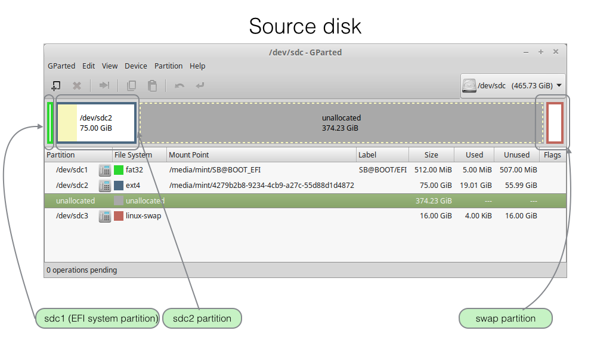
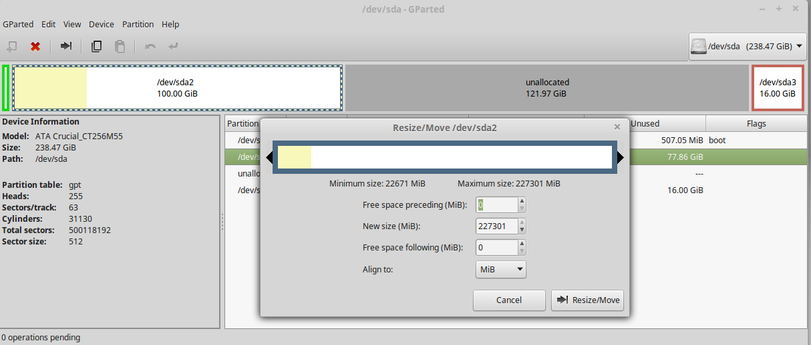
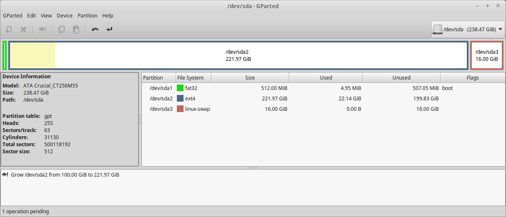
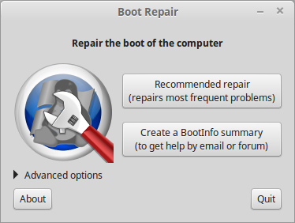
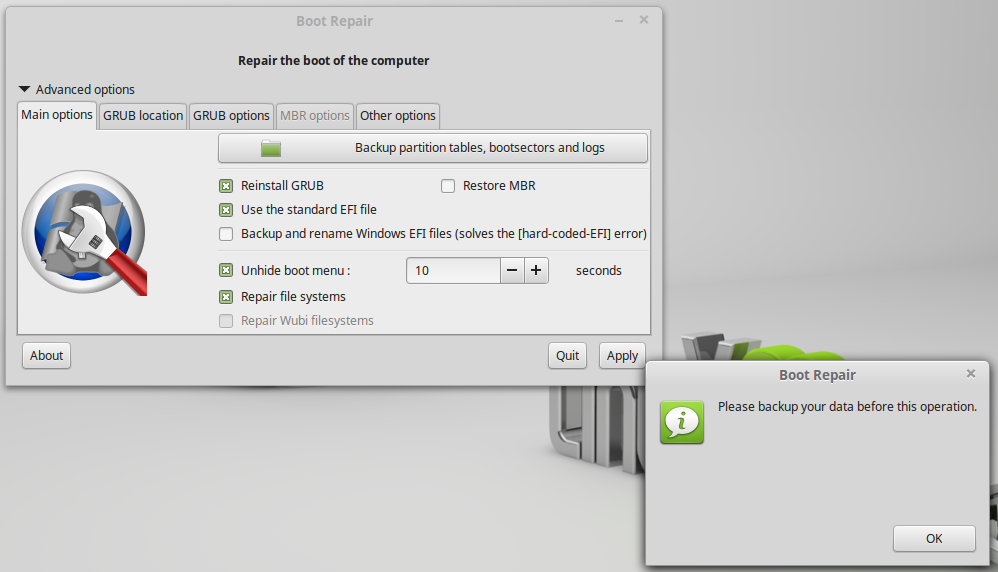
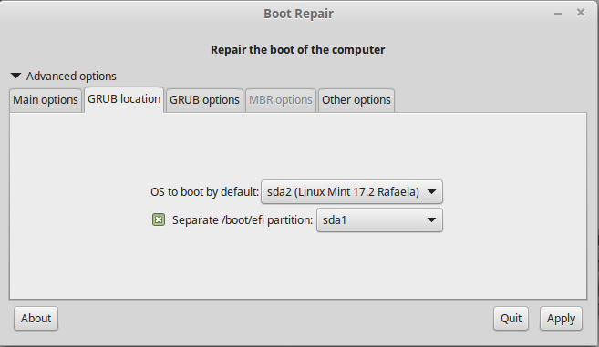
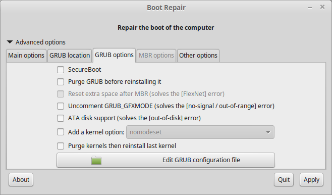
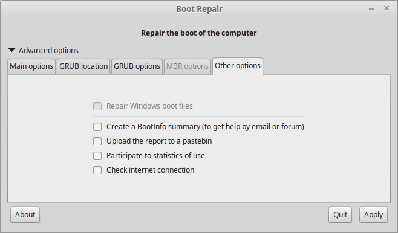
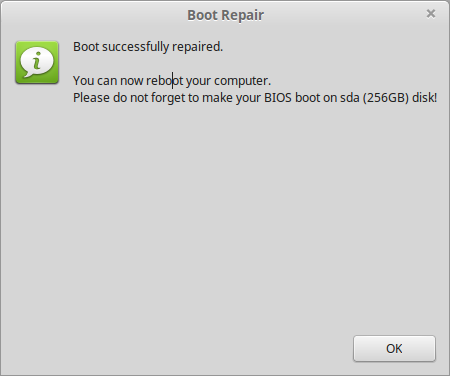

Objectives
Instructions on cloning an external disk's partitions and content to a NUC internal disk. Method described in this lab also successfully used to copy from one external usb disk to another. Competing technologies considered were Clonezilla, Systemback and the commandline application dd.
Approach
A number of methods were considered, namely:
The most satisfactory outcome was achieved using gparted. The use of gparted only is described in this lab.
Systemback would have been a second choice.
dd proved too slow for this particular situation where only about 25% of the NUC's capacity contained data.
- In other situations where a complete disk copy would be required, dd might well be the way to go.
Copy source to target
- Power up the NUC, booting from a live linux usb key.
- Creating a bootable linux live key is described in the previous lab, step 01.
- Connect the source usb disk to the NUC.
- Launch gparted
sudo gparted
- Create a partition table spanning entire NUC disk (sda). This may require deletion of any existing partitions.
- Device | Create Partition Table
- Copy first sdc1 and then sdc2 from source disk (Figure 1) and paste into target partition.
- For each partition to be copied:
- Source disk: select the partition, right click to open context menu, then select copy.
- Target disk (NUC): select partition table and paste source-copied partition.
- Create a swap partition in target.
- For a NUC with 16 GiB memory we have chosen a matching size of swap (16384 MB == 16 GiB).



- Change UUIDs of target partitions (sda1, sda2):
- Select each partition in turn, right click to launch context menu and select New UUID.
- Apply changes:
- Edit | Apply all operations
Repairing bootloader
It is likely that the NUC will fail to boot unless modifications are made to its bootloader.
-
Unmount the source usb drive and unplug from NUC.
-
Ensure the application Boot Repair is installed. If not, here is a script to do so.
- Expand the script archive, set its permissions and execute:
unzip installbootrepair.zip
sudo chmod +x installbootrepair
sudo ./installbootrepair
When installation has completed, the Boot Repair app launches automatically.

- Main options tab:
- Choose the settings shown in Figure 2 and press OK in the Boot Repair window: Please backup your data before this operation.
- Note: we never did back up our data and never incurred data loss. However, our decision was made in the knowledge that any such data loss would not be critical.

- GRUB location tab: choose the settings shown in Figure 3.

- GRUB options tab: Disable secure boot.

- Other options: all disabled as shown in Figure 5.

Press Apply and wait for, hopefull, a successful conclusion.

Test by attempting to boot off internal (target) drive.